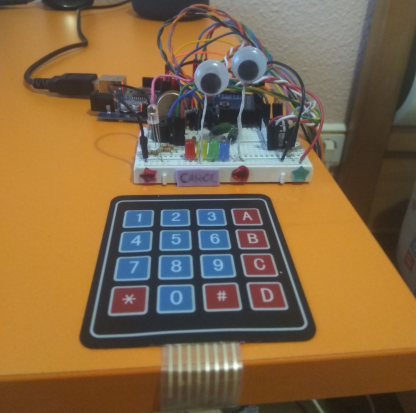

 La intención principal no era hacer a carol, de hecho solo quería hacerme un aparato que me facilitase configurar mi PC rápidamente mientras estoy jugando un jueo, por ejemplo.
Entre esas utilidades se encontraban la de subir y bajar el volumen, el brillo de la pantalla y la sensibilidad del ratón, aunque también puede hacer que mi PC reproduzca música y tiene un espacio en el menú reservado para añadirle algún minijuego que use el teclado, el display numérico o los leds.
Más adelante se me ocurrió darle algo de carisma, así que le puse dos alambres con ojos de plástico y la decoré con unas estrellas que tenía y con algo de arena de colores y le programé para que hiciera sonidos con un buzzer y se expresase un poco con un led rgb.
Más adelante, tenía la sensación de que a Carol le faltaba algo, así que hice una función para que tocase Megalovania con el buzzer, lo que fue bastante difícil ya que tuve que buscar las frecuencias de cada nota musical y programar toda la melodía usando tonos y pausas para todas las notas de la canción. Uno días después, como era el cumpleaños de una amiga, decidí hacer lo mismo con el cumpleaños feliz.
Soy usuario de un Amazon Echo Dot, y otra de las motivaciones para hacer a Carol fue que, aunque estaba satisfecho con Alexa, me faltaba algo de interacción con el PC, y la verdad es que, como Carol hace todo lo que Alexa no puede hacer, se complementan muy bien y hacen un buen equipo.